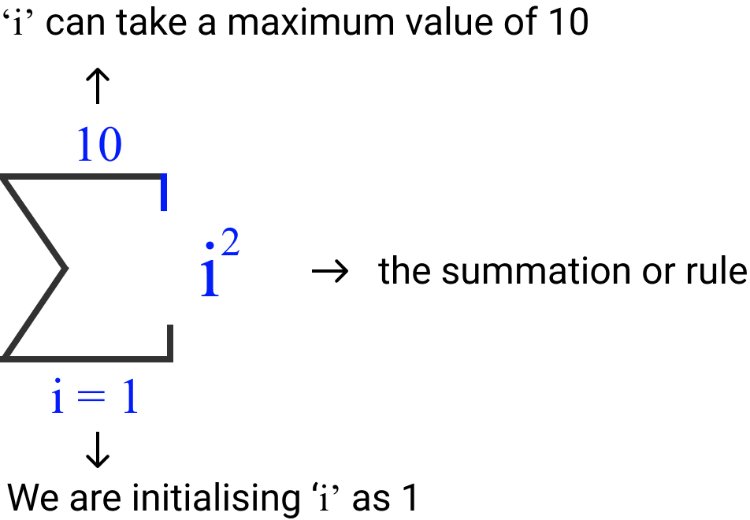
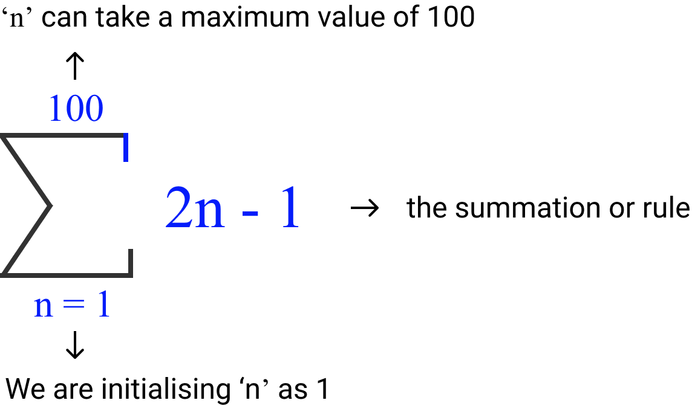
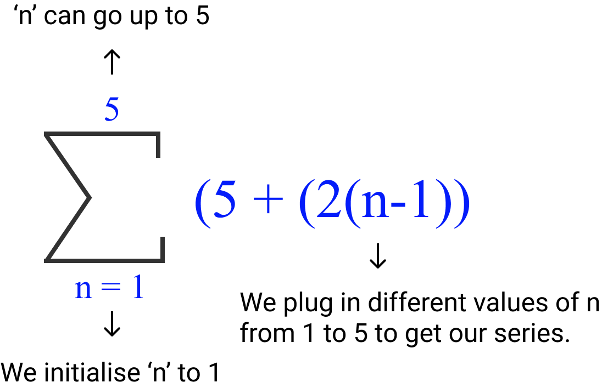
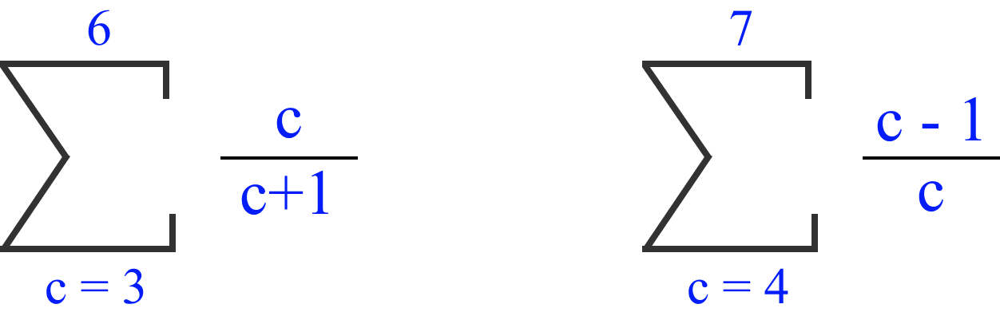

Sigma Notation (Mathematics)
Many times we come across mathematical notations that express a relationship, equation or a series. Mathematics is integral to finance and hence we cannot avoid these mathematical notations. When we encounter them the first time, they seem daunting. But when we spent some time to understand their format and get acquainted with them, they can be understood and handled easily. In this article, we will discuss one of the common notations called "Sigma" notation.
The sigma notation comes in various forms but the most common form is as below.
We will use some examples to understand how to use sigma notation.
Example 1
Let's say we want to sum the following terms.\[ 1^2 + 2^2 + 3^2 + 4^2 + 5^2 + 6^2 + 7^2 + 8^2 + 9^2 + 10^2 \]
We can write this as it is, but if we were to do the sum of the series up to 100 or 1,000 numbers then it is incovenient to write down the entire series. Instead, we can use a short form to express what we want to do. We do this with the help of a sigma notation. The following shows how it works.

- We declared a variable called "i" and initialized it to 1 (as our sum starts from 1). We write that down at the bottom of the sigma symbol.
- Our summation is only till 10. Therefore, we put that restriction by mentioning it on the top of the sigma symbol.
- We want to square the values. We mention that as i2 to the right of the sigma symbol.
Example 2
Let's suppose we have the following series. \[ 2(1)-1 \; + \; 2(2)-1 \; + \; 2(3)-1 \; + \; 2(4)-1 \; + 2(5)-1 \; + \; 2(6)-1 \; + \; 2(7)-1 \; + .....................+ \; 2(99)-1\; + 2(100)-1 \]It is quite hard to write the series till 100 and even if we write it, it is not going to help us in any way. By using sigma notation, we can write it in an elegant and simplified form. The following is the notation.

- We declared a variable called 'n' and initialized it to 1 (as our sum starts from 1). We write that down at the bottom of the sigma symbol.
- Our summation is only till 100. Therefore, we put that restriction by mentioning it on the top of the sigma symbol.
- The summation is in the form of 2(n)-1. We mention that to the right of the sigma symbol
Example 3
Let's say we have the following sigma notation. How do we intrepret it?
This notation can be evaluated as follows.
\[ 5 \; \text x \; ((2 \; \text x \; 4) + (2 \; \text x \; 5) + (2 \; \text x \; 6)) \] \[ 5 \; \text x \; (8+10+12) = 5 \; \text x \; 30 = 150 \]
This notation has the following meaning.
- The valiable p is declared and initialized to 4. This is written at the bottom of the sigma symbol.
- The maximum that p can reach is 6; this is written at the top of the sigma symbol
- The 2p is the summation rule, which means that 2 is multiplied to the value of p. The value of p starts at 4 and ends at 6. These different components are added together to find the sum.
- The number '5' before the sigma symbol indicates to us that the result of the summation should be multiplied by 5
Example 4
While dealing with structured products, we may come across the payoffs in the form of equations. For instance, the following is the payoff of an Cliquet Option, where the seller shall pay to the Buyer an amount determined by the Calculation Agent equal to;\[ Equity \; Notional \; Amount \; \text x \; Max \left(0, \sum_{j=1}^{12} Min \; [Monthly \; Cap, R_j] \right) \]
Where
Rj is the monthly return of SPX for the jth observation date (J=1,2,......12), etc.
Rj = (Pj - Pj-1) /
Pj-1 is the closing price of the previous observation date.
P0 is the closing price of the SPX on the trade date
With each Rj subject to the monthly cap and the monthly floor.
To understand the above formula, we need to break it down into pieces. The following is one of the ways.
If we focus on the sigma notation part, it means that the monthly returns (Rj) are summed together and the minimum amount between the monthly cap and the returns is compared with zero, and whichever is the maximum value is multiplied with Equity Notional Amount to find the settlement value. Without sigma notation, it would have been quite difficult to express the monthly returns.
Note: Monthly Returns Rj = Returns of every month such as returns of Jan + Feb + March + .... + December. These monthly returns have been expressed in a sigma notation form to make the equation simpler to understand.
Example 5
Sometimes, the underlying series could be easy but when we try to express it in the form of a sigma notation, it may have to be changed. Let's consider the following series.\[ 5 + 7 + 9 + 11 + 13 \]
We can see that the series starts with 5 and is incremented by 2. In order to express it in a sigma form, we may need to find a formula to express it. The following could be one of the ways of expressing it in the form of a sigma notation.

- We had to create a small formula to express our series. So, sometimes using sigma notation might require a bit of thought behind how to represent an expression or series.
Example 6
Similar to Example 5 earlier, sometimes, while dealing with summation of fractions, we may not have a direct intuitive way to express in sigma notation. We may have to figure out a formula or a method to express. Let's consider the following fraction series.\[ {3\over4} + {4\over5} + {5\over6} + {6\over7} \]
This series can be expressed in many ways. The following are two of the ways in which it can be expressed.

I hope the above examples provided a brief introduction to the sigma notation. As with any form of mathematics, practice and continuous learning is essential to make ourselves comfortable with the mathematical terms.